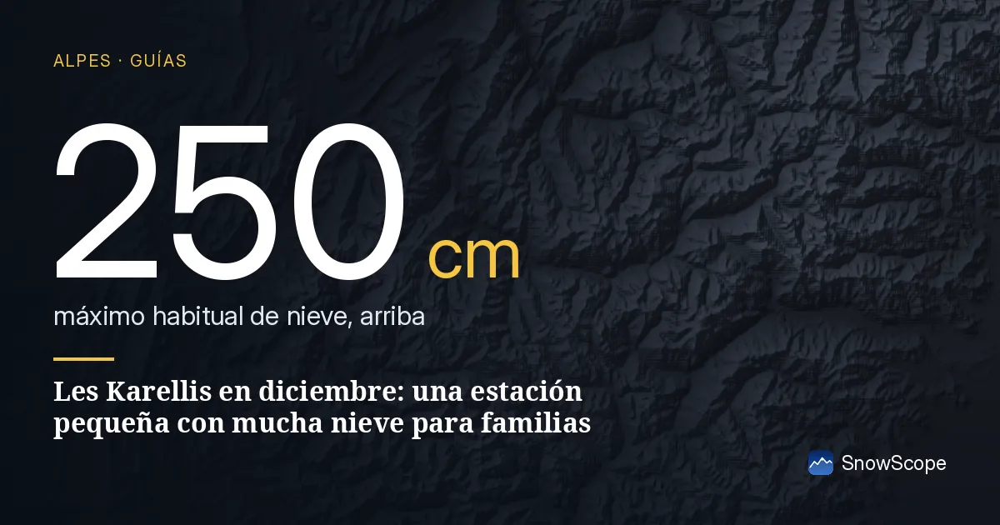

Les Karellis en diciembre: una estación pequeña con mucha nieve para familias
Les Karellis en diciembre es una opción tranquila para padres que buscan nieve segura sin gastar demasiado. Esta estación del valle de Maurienne es más pequeña que sus vecinas, pero está a una altitud suficiente para ofrecer buen esquí a principios de temporada. Si estás planeando un viaje familiar, la combinación de una base a 1550 m y forfaits asequibles la convierte en una alternativa práctica a los dominios esquiables gigantes.
Consulta la previsión de nieve en tiempo real de Les Karellis en la app SnowScopeEspesor de nieve, alertas de nieve polvo y mapa 3D, gratis.
Una estación pequeña con una base elevada
Les Karellis es una estación compacta y fácil de recorrer para las familias. El dominio esquiable tiene 45 km de pistas y 14 remontes, lo cual es suficiente para una semana de esquí con niños. La estación empieza a 1550 m y sube hasta los 2484 m, con un desnivel total de 934 m. Como el pueblo está a 1550 m, a menudo tienes nieve justo al pie de los remontes.
Nuestra historia de nieve de los últimos 46 inviernos muestra que la base es bastante fiable para una estación de este tamaño. El espesor habitual en diciembre en la base es de 37 cm. En un invierno generoso, algo que ocurre aproximadamente 1 de cada 10 años, el espesor puede alcanzar los 73 cm. Incluso en un invierno con poca nieve, que también ocurre 1 de cada 10 años, la base suele tener al menos 16 cm de nieve. Esta cota es una gran ventaja cuando otras estaciones más bajas todavía están esperando una capa sólida.

Nieve en diciembre semana a semana
El espesor de la nieve en Les Karellis mejora notablemente a medida que avanza diciembre. En la primera semana del mes, del 1 al 7 de diciembre, la base tiene 30 cm o más en el 43 % de los inviernos pasados. Para la semana del 22 al 28 de diciembre, esta probabilidad sube al 76 % . Si buscas una capa más profunda de 50 cm o más en la base, eso ocurre en el 50 % de los inviernos pasados durante la última semana del mes.
Más arriba en la montaña, las cifras son aún mejores para los primeros visitantes. A media montaña (2017 m), el espesor habitual el 15 de diciembre es de 63 cm. En el 98 % de los inviernos pasados, hay al menos 30 cm de nieve a esta altura durante la segunda mitad del mes. En la cima de los remontes (2484 m), el espesor habitual es de 98 cm el 15 de diciembre. En unos 9 de cada 10 inviernos, la parte alta de la montaña tiene 50 cm o más de nieve ya en la semana del 15 al 21 de diciembre.
Lo que paga una familia por los forfaits
Uno de los motivos principales para fijarse en Les Karellis es el precio. Para la temporada de invierno 2026-27, el forfait de un día para adultos (18+) cuesta 36,00 EUR. Es un precio muy bajo para una estación con 934 m de desnivel. Si reservas una estancia más larga, el forfait de 6 días para adultos cuesta 191,00 EUR. Estos precios están verificados en la web oficial y ayudan a que una familia mantenga bajo el coste total del viaje.
La estación está diseñada para ser sencilla y asequible. Con 14 remontes que dan servicio a 45 km de pistas, no pagas por una red masiva de cientos de kilómetros que los niños pequeños quizá ni siquiera utilicen. En su lugar, pagas por un área funcional que tiene un remonte superior a 2484 m, lo que garantiza que puedas encontrar buena nieve aunque el nivel del pueblo esté escaso.
Comparativa con Valloire-Valmeinier
Es útil comparar Les Karellis con Valloire-Valmeinier, que es una vecina mucho más grande. Valloire-Valmeinier tiene 131 km de pistas y 34 remontes, pero también es más cara. Allí, el forfait Galibier-Thabor de 6 días para adultos cuesta 278,50 EUR, y el de un día para adultos 54,90 EUR. Aunque Valloire-Valmeinier llega más alto, a 2738 m, su base es más baja, a 1406 m.
Cuando miramos la nieve a media montaña, ambas son muy parecidas. A 2017 m en Les Karellis, el espesor habitual en diciembre es de 63 cm. En Valloire-Valmeinier, a 2072 m, es de 66 cm. Ambas estaciones tienen un 98 % de probabilidad de tener 30 cm o más a media montaña en la segunda mitad de diciembre. Para una familia, Les Karellis ofrece casi la misma seguridad de nieve que su vecina más grande, pero por un precio mucho menor.
Qué tener en cuenta antes de reservar
Nuestra historia de nieve muestra que diciembre en Les Karellis es, de hecho, cada vez más nivoso. A media montaña, la media de diciembre fue de 55 cm en los primeros 15 inviernos (1980-81 a 1994-95). En los últimos 15 inviernos (2011-12 a 2025-26), esa media ha subido a 64 cm. Esta tendencia es una buena señal para quienes planean un viaje en diciembre de 2026.
A fecha de 13 de noviembre de 2026, la temporada empieza bien. Actualmente hay 0 cm en la base y 3 cm en la cima, pero se espera que los próximos 7 días traigan 32 cm de nieve nueva a la base y 86 cm a la cima. La previsión a dos semanas para media montaña y cotas superiores muestra un rango de entre 68 cm y 104 cm de nieve nueva. Consulta siempre la web oficial para el forfait de 6 días de 191,00 EUR y no pierdas de vista los partes de nieve a medida que se acerque tu viaje.
Consejos para esquiadores
- Reserva tu viaje para la segunda mitad de diciembre, cuando la probabilidad de una base de 30 cm sube al 70 % o más.
- Quédate en las pistas de media montaña a 2017 m si la base está escasa, ya que hay un 98 % de probabilidad de nieve allí después del 15 de diciembre.
- Compra el forfait de 6 días para adultos en la web oficial por 191,00 EUR para obtener el mejor precio.
- Consulta el boletín de aludes antes de esquiar fuera de pista, especialmente si el espesor en la cima está cerca de los 98 cm habituales.
- Compara la tarifa diaria de 36,00 EUR con las estaciones cercanas si solo tienes pensado esquiar unos pocos días.
Más mapas (sitios externos)
Referencias y créditos
- Les Karellis, official prices 2026-2027 www.leskarellis.com/fr/tarifs-2026-2027-sans-lien
- Valloire, official ski pass shop (Galibier-Thabor), winter 2026-27 skipass.valloire.com/fr/
- SnowScope, December snow at three heights and today's snow map snowscope.app/
Sobre estas cifras
Nieve actual y tendencia a dos semanas: previsiones de SnowScope (tendencia de ECMWF y GFS, un rango, no una promesa). Remontes y pistas: cartografía de OpenSkiMap. Precios: las páginas oficiales de abajo, consultadas el 2026-11-13; los precios pueden cambiar, compruébalos antes de reservar.
Boletines oficiales de aludes: Météo-France – Bulletin d'estimation du risque d'avalanche
Citar este informe
Para investigación, docencia o prensa: cifras y gráficos reutilizables libremente bajo CC BY 4.0 con esta cita.
SnowScope (2026), Les Karellis en diciembre: una estación pequeña con mucha nieve para familias, https://snowscope.app/blog/es/2026/11/les-karellis-small-resort-december-ski-week-price-2026.html, consultado el 2026-11-14
SnowScope (Atlas Labs). (2026, November 14). Les Karellis en diciembre: una estación pequeña con mucha nieve para familias. SnowScope snow reports. https://snowscope.app/blog/es/2026/11/les-karellis-small-resort-december-ski-week-price-2026.html
BibTeX
@misc{snowscope2026leskarellissmallresortde,
author = {{SnowScope (Atlas Labs)}},
title = {Les Karellis en diciembre: una estación pequeña con mucha nieve para familias},
year = {2026},
month = nov,
howpublished = {\url{https://snowscope.app/blog/es/2026/11/les-karellis-small-resort-december-ski-week-price-2026.html}},
note = {Published 2026-11-14 13:29 UTC; accessed 2026-11-14}
}· CC BY 4.0 · Métodos, datos y herramientas →
Les Karellis: nieve y temperatura según la altura, este invierno vs el pasado (herramientas) →
Sigue Les Karellis
Gratis: un aviso cuando llega la nieve y la previsión cada mañana.
Más partes de nieve

La nieve de hoy en Cortina, la previsión estacional europea para diciembre y nuestras probabilidades de una Navidad blanca en el este de los Dolomitas.

Chamonix comienza diciembre con 27 cm en la cima pero nieve fina más abajo. El calor y la humedad se enfrentan; espera nieve de diciembre casi normal. Datos del 10 de noviembre de 2026.